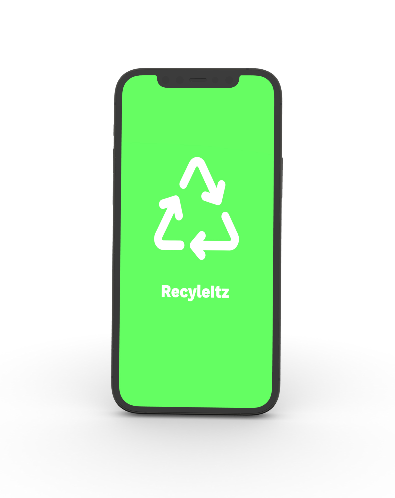
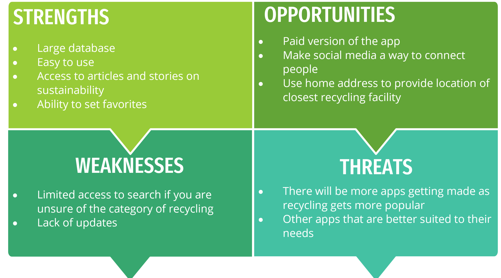
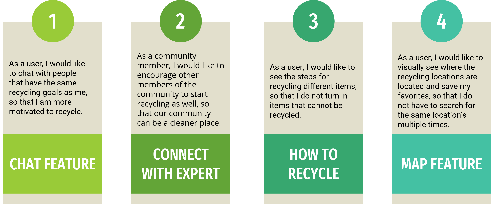
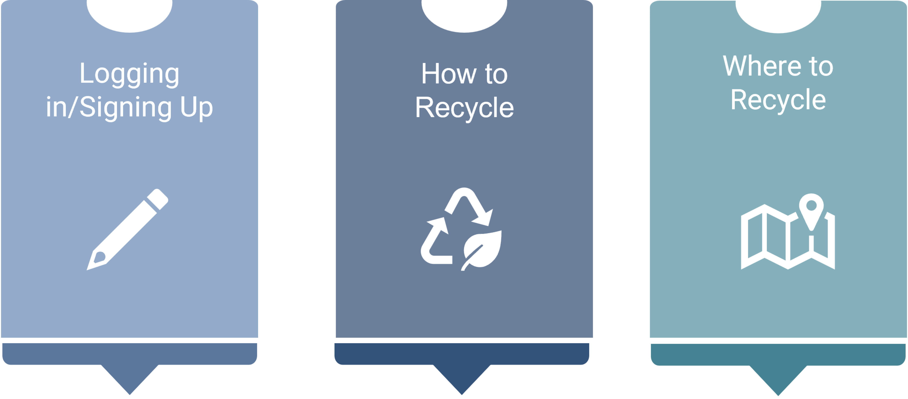
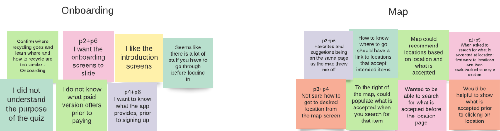
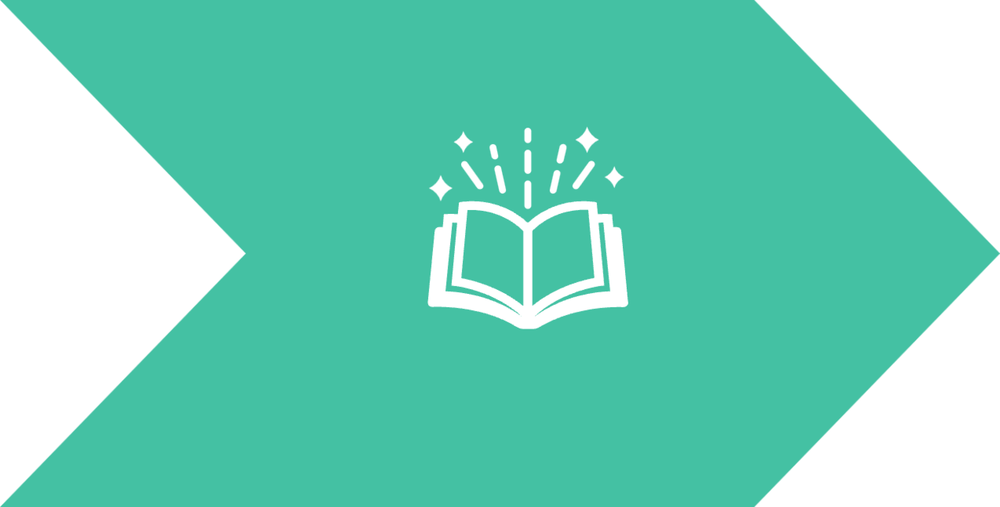

RecycleItz
An application to make the recycling process stress-free

If you would like to skip ahead to the full prototype click below
Project Overview
Background
RecycleItz is a web application where the primary goal is to make the process of recycling easier for its users with this problem statement is mind: Users need a way to know where to go to recycle, as well as the ability to bring the recycling to the centers with little to no contamination, so that when it is sent to a sorting center, it will be recycled and not sent to the landfills. We will know this to be true, when 75% of the recycling that is brought to the centers is sent to be recycled and not thrown away. The process started with researching what the current issues were within the recycling industry, by interviewing people who both recycle and do not recycle, to test if the hypothesis were true. The research gathered was used to create wireframes and a prototype that would help with the struggles people were having with the recycling process. The prototype was used to test if the usability was working properly. Lastly, higher fidelity wireframes were created after learning more about the different UI principals.
Title:
RecycleItz mobile application
Role:
UX/UI Designer/Reseracher
Duration:
April 2022-November 2022
Problem:
Users need a way to know where to go to recycle, as well as the ability to bring the recycling to the centers with little to no contamination, so that when it is sent to a sorting center, it will be recycled and not sent to the landfills.We will know this to be true, when 75% of the recycling that is brought to the centers is sent to be recycled and not thrown away.
Tools
- Pen & Paper
- Figma
- Figjam
- Optimal Sort
- Google Drawings
- Lucid
- Survey Monkey
Process
INSPIRATION PHASE
The process began with the Inspiration Phase. This phase included the following: brainstorming problems/solutions, competitive analysis and the functionalities of the application.
These are some of the main problems with the recycling industry right now.

Through brainstorming some of the problems and solutions, this helped to create a Problem Statement that would be solved throughout the creation of this application.
Problem Statement
To learn more about what the competition was for recycling applications, a completive analysis was done on the following apps:
SWOT Analysis for iRecycle/Earth 911
SWOT Analysis for iRecycle/Earth 911
Learned from Competitive Analysis
The Recycling industry is a relatively new field in terms of app development. The apps in this field, were either very specific to their geographical area and/or only have very specific features included. Although this was good, because this meant that the app had a strong possibility of being successful, it also came with its challenges. It was a little bit difficult to draw inspiration from an almost untapped market. This meant creativity had to be used when creating the designs for this app.
Executive Summary
From the research, some user stories were created in order to start building empathy with the potential users of this application.
User Stories
CONCEPTUALIZATION PHASE
To get a better idea of what people were thinking on the topic of recycling, I conducted both surveys and interviews. These were some of the main takeaways:
Using the information gathered from the surveys and interviews 2 personas were created to emphasize empathy in the design process. The personas were named Sara and Mike. Lets focus on Sara.
Persona
Sara has made the decision to start recycling. Her goals are to know where and how to recycle, and she wants to feel confident that the process is being done correctly.Here is what her journey map and mental model would look like during this process.
Journey Map
Mental Model
Next, user flows for tasks that Sara and Mike would be completing while using the app were created. Here is an example of a task that Sara would complete while using RecycleItz: Sara has prepared her recycling. She now needs to know where to go.
Userflow
ITERATION PHASE
Next, the process continued to the Iteration Phase. This portion of the project, focuses on creating prototypes and testing.
Keeping Sara and Mike in mind, a site map was created to help with the organization of the entire application.
Sitemap
Google Drawings was used on the first attempt at creating a site map. Then a card sorting activity was conducted using OptimalSort to get a better idea of what others thought belonged in each section.
Card Sorting Results
From the card sorting people wanting to be able to get the paid version of the app in the profile section, and see multiple items within that same page was determined. After getting the results from my Card Sorting activity, as well as other research, another version of the sitemap was created. This sitemap was created using FigJam.
Final Version of Sitemap
Then came the time to start designing the screens. There were 3 main features to focus on for my prototypes. Those features were:
For now, lets focus on the process of the creation of the Where to Recycle wireframes.
Low-fidelity Wireframes
The low-fidelity wireframes were then transposed into Figma.
Before usability testing, the wireframes were updated to a more mid-fidelity to be understood by the testers.
Mid-fidelity Wireframes
Usabilty Testing
The information from the usability testing was sorted into categories that would be useful in making updates to the wireframes.
These were the main conclusions from the Usabilty Testing:
The Rainbow spreadsheet was used to decide what items needed to be fixed to make my application more user friendly.
Main issues with Prototype
- People were clicking on connect with others to get to the community initiatives section
- People were looking for “where is my recycling” in the Profile section.
- Add other options to confirm recycling is correct, other than confirming with a photo.
Using the data from the Rainbow Spreadsheet, the wireframes were updated. One issue was that people were looking for where is my recycling in the profile section.
Before
After
Finally, I started making high-fidelity wireframes. To do this, it was most beneficial to get an opinion from people on what kind of illustration they prefer for the application. Preference testing was conducted using UsabilityHub. 60% of my testers preferred Version 2.

Because of the results received from the preference testing; these were some of the screens that were used for Onboarding:
One of the most challenging parts of this project was the learning of UI Design. The Splash screen didn't fit the typical design of a splash screen and the onboarding screens did look like they all belonged together. Using what was learned from the preference testing an animated look was used, but with illustrations that looked more uniform. This was the result:
Then it was time to make iterations. The Principals of Hierarchy, Law of Good Continuation, Balance and Law of Similarity were used to make these iterations., as well as the help from other UX Designers on how to best make updates to my current wireframes. Continuing with the theme of the where to recycle screens, this is what the progression of what the map screen looked like over time.

EXPOSITION PHASE
Last, this entire summary of this project has been the Exposition phase, which includes the presentation and story telling aspect.
Key Learnings
- The world of UX Design and Research and everything that it entails.
- The power of iteration and how valuable getting feedback from real people can be was also a huge lesson that was learned during the design of this application.
- Learning UI Design and its principals, which was the part I had the most difficulty learning, as it had the biggest learning curve.
Next Steps
- Do a final round of user testing to ensure that everything is working as expected.
- Make finalizations to the screens and add any missing screens.
- Find developers that would be interested in working on bring this application to life, so that people can start using it themselves.
Click above to view fully functioning prototype